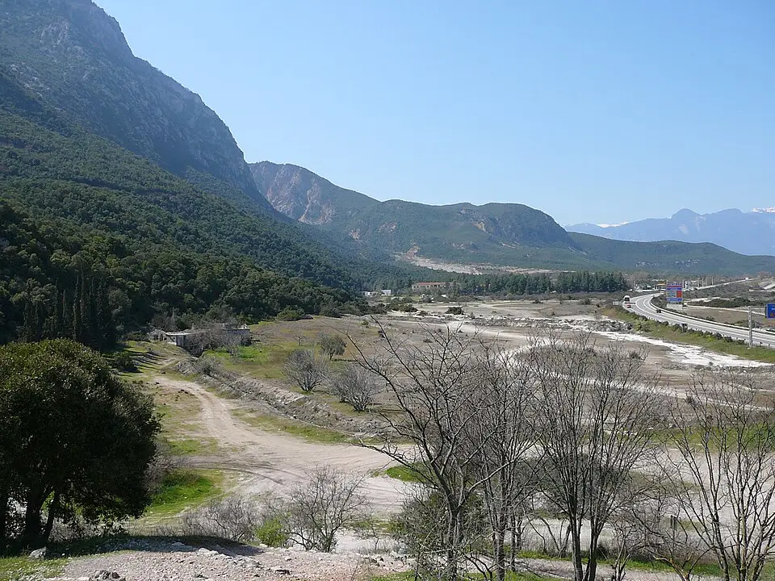
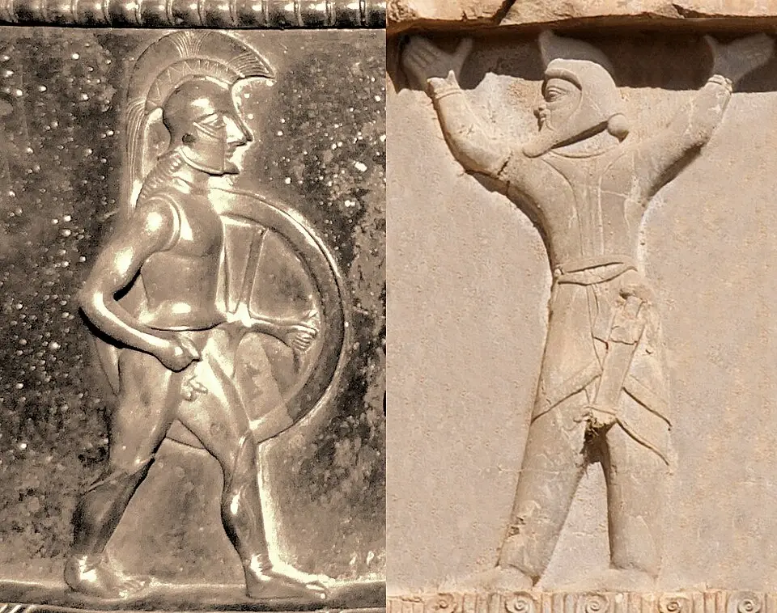
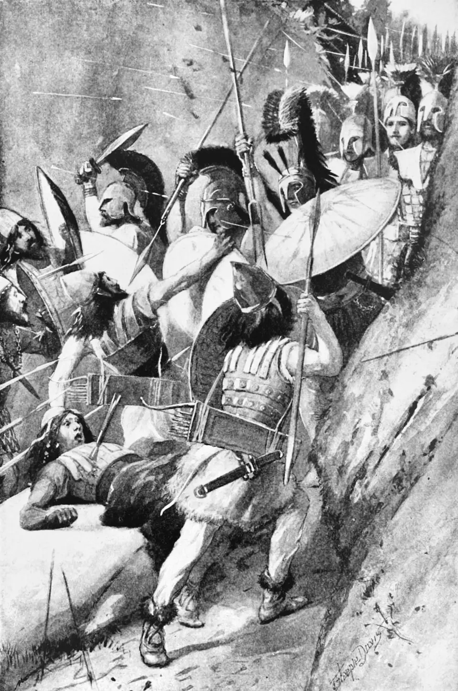

Thermopylae: không chỉ có 300 người Sparta
Khoảng 7.000 lính Hy Lạp, trong đó có 300 người Sparta, chặn đạo quân Ba Tư ở một con đèo ven biển suốt ba ngày. Họ thua, và trận thua ấy được kể lại suốt 2.500 năm.

Cuối tháng 8 hoặc đầu tháng 9 năm 480 TCN, vua Xerxes của Ba Tư dừng quân trước một dải đất hẹp kẹp giữa vách núi và vịnh Malia, ở miền trung Hy Lạp. Chắn đường ông là khoảng 7.000 lính Hy Lạp do vua Leonidas của Sparta chỉ huy. Trận đánh kéo dài ba ngày và kết thúc bằng thất bại của phe Hy Lạp. Vậy mà người ta nhớ nó như một chiến thắng, và nhớ nó qua một con số không đầy đủ: 300.
Vì sao lại là con đèo này?
Mười năm trước, quân Ba Tư của vua Darius I đã thua ở Marathon. Xerxes, con trai ông, quay lại với một lực lượng lớn hơn nhiều cả trên bộ lẫn trên biển. Tướng Athens Themistocles đề xuất một kế hoạch kép: chặn bộ binh Ba Tư ở Thermopylae, đồng thời chặn hạm đội Ba Tư ở eo biển Artemisium gần đó.
Thermopylae nghĩa là "Cổng Nóng", vì ở đó có suối nước nóng. Lối đi có ba chỗ thắt hẹp, và ở chỗ giữa người Phocis đã xây sẵn một bức tường từ thế kỷ trước. Theo Herodotus, có đoạn chỉ vừa một cỗ xe đi qua. Các mẫu khoan địa chất gần đây cho thấy cả con đèo khi ấy rộng khoảng 100 m, và nước biển dâng lên sát chân lối đi. Ngày nay chiến trường cũ nằm bên kia đường quốc lộ, đối diện tượng đài.
Thời điểm cũng bất lợi. Sparta đang mừng lễ Carneia, dịp luật Sparta cấm hành quân, và cả Hy Lạp đang trong thời gian hưu chiến của Thế vận hội. Vì thế Sparta chỉ gửi đi một đội tiền trạm: Leonidas cùng 300 lính cận vệ. Herodotus viết rằng Leonidas chỉ chọn những người đã có con trai còn sống. Nhưng 300 người ấy không đứng một mình.
Không chỉ có 300 người


Dọc đường, quân của các thành bang khác nhập vào, nên khi đến đèo lực lượng Hy Lạp có khoảng 7.000 người. Còn quân Ba Tư thì không ai biết chắc. Herodotus ghi 2,6 triệu lính, cộng thêm chừng ấy người phục vụ. Nhà thơ Simonides, người cùng thời, nói bốn triệu. Ctesias đưa ra 800.000. Các nhà sử học hiện đại phần lớn ước tính khoảng 120.000 đến 300.000 người.
Ngày đầu, Xerxes cho quân Medes tấn công, rồi tung đội tinh nhuệ "Bất Tử" gồm 10.000 người. Cả hai đợt đều không qua được. Ngày thứ hai cũng vậy. Rồi một người địa phương tên Ephialtes, mong được thưởng, chỉ cho Xerxes một lối mòn vòng qua núi Anopaea ra sau lưng quân Hy Lạp. Đêm đó, tướng Hydarnes dẫn quân theo lối ấy.
Sáng ngày thứ ba, biết mình sắp bị bao vây, Leonidas cho phần lớn quân đồng minh rút đi. Ở lại có 300 người Sparta, 700 người Thespiae, và theo một số nguồn còn có 400 người Thebes cùng tối đa 900 nông nô helot. Phần lớn quân Thebes được cho là đã đầu hàng. Những người còn lại lùi lên một ngọn đồi nhỏ và đánh đến người cuối cùng. Phần lớn những gì ta biết về ba ngày ấy chỉ đến từ một người.
Sử sách chép gì, và chép quá ở đâu


Gần như mọi điều ta biết về trận này đến từ quyển VII bộ Sử ký của Herodotus. Sử gia Paul Cartledge nhận xét rằng viết về Thermopylae thì hoặc dựa vào Herodotus, hoặc không viết được gì. Những câu nói nổi tiếng nhất thì khó kiểm chứng. Khi có người than rằng tên Ba Tư sẽ che khuất mặt trời, Herodotus kể chiến binh Dienekes đáp rằng như thế càng tốt, họ sẽ đánh nhau trong bóng râm. Plutarch, sống nhiều thế kỷ sau, lại gán câu ấy cho Leonidas. Câu "Molon labe", nghĩa là "đến mà lấy", được gán cho Leonidas khi Xerxes đòi quân Hy Lạp nộp vũ khí.
Con số thương vong cũng vậy. Herodotus nói Ba Tư mất tới 20.000 người. Ông cũng có chỗ nói 4.000 người Hy Lạp tử trận, nhưng con số đó gần bằng toàn bộ quân Hy Lạp có mặt, nên các nhà nghiên cứu cho rằng thiệt hại thực có lẽ khoảng 2.000.
Có một bằng chứng vật chất. Năm 1939, nhà khảo cổ Spyridon Marinatos đào ở đồi Kolonos và tìm thấy rất nhiều đầu mũi tên bằng đồng của Ba Tư. Phát hiện này khiến giới nghiên cứu xác định lại ngọn đồi nơi những người lính cuối cùng ngã xuống. Còn người chỉ đường cho Xerxes thì để lại tên mình trong ngôn ngữ.
Trong tiếng Hy Lạp, cái tên Ephialtes về sau mang nghĩa "ác mộng", và trở thành hình mẫu của kẻ phản bội.
Một cái tên trở thành cơn ác mộng
Kẻ chỉ đường không được lịch sử tha thứ. Trong tiếng Hy Lạp, cái tên Ephialtes về sau mang nghĩa "ác mộng", và trở thành hình mẫu của kẻ phản bội. Ephialtes cũng không được Ba Tư thưởng gì. Sau trận Salamis, ông trốn sang Thessaly khi các thành bang Hy Lạp treo thưởng lấy đầu ông. Theo Herodotus, khoảng năm 470 TCN ông bị một người tên Athenades giết vì một lý do không liên quan, nhưng người Sparta vẫn trả thưởng cho Athenades. Cả Hy Lạp cũng biết rằng trong số người Sparta được cử đến đèo chỉ có hai người sống sót, là Aristodemus và Pantites.
Dư âm đến hôm nay
Khi đèo thất thủ, kế hoạch chặn ở Artemisium mất ý nghĩa và hạm đội Hy Lạp rút về Salamis. Quân Ba Tư chiếm Athens đã bỏ trống. Nhưng cuối năm 480 TCN, hải quân Hy Lạp thắng lớn ở Salamis. Xerxes rút phần lớn quân về châu Á, và năm sau quân của tướng Mardonius ở lại bị đánh bại ở Plataea.
Trên gò chôn người Sparta từng có một tấm bia khắc hai câu thơ thường được cho là của Simonides, đại ý: khách qua đường, hãy báo cho người Sparta rằng chúng tôi nằm đây, vâng theo lời họ. Tấm bia gốc đã mất, bản khắc mới được dựng năm 1955. Năm 2006, bộ phim "300" của Zack Snyder, dựng theo truyện tranh của Frank Miller, thu khoảng 456 triệu USD.
Thermopylae là một trận thua có thật, được kể lại bằng những con số phóng đại; điều đáng nhớ là ba ngày ấy đã diễn ra, chứ không phải chỉ có 300 người đứng đó.